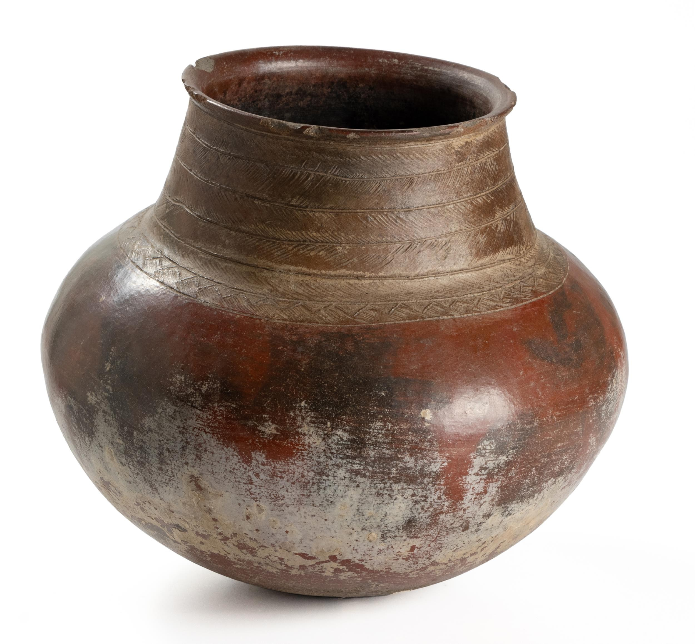
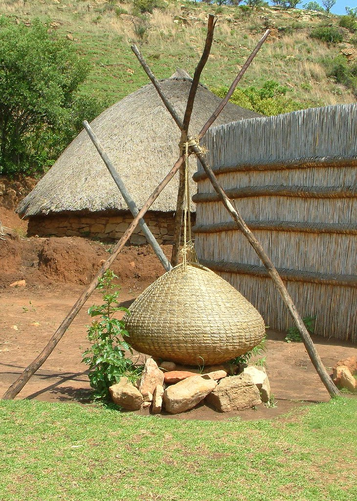
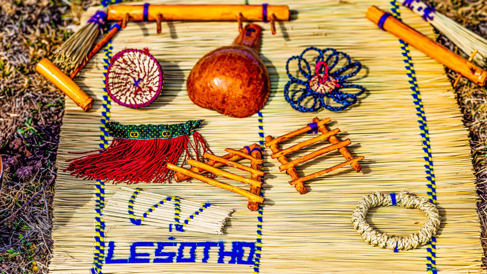
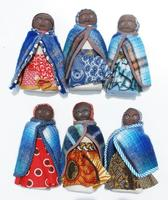
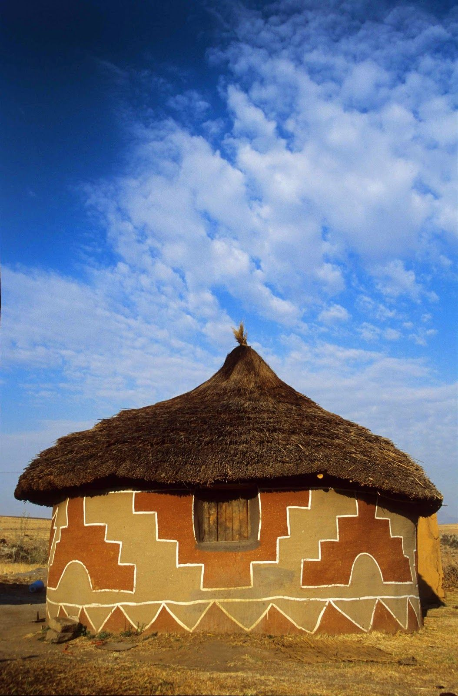

ke ntho ea Basotho eo baneng ba kha metsi le ho tshela letsina
ke ntho eo Basotho ba e sebelisa ho tshela lijo joaloka poone
Basotho ne ba honoa metsi kapa mothemahane
ke ntho Basotho bane khabisa ka eona ka tlung 
(Popi)Wood carving is a traditional craft that showcases the skills and creativity of Basotho artisans. 
Basotho bane ba taka matlo ka ntle ho a ntafatsa